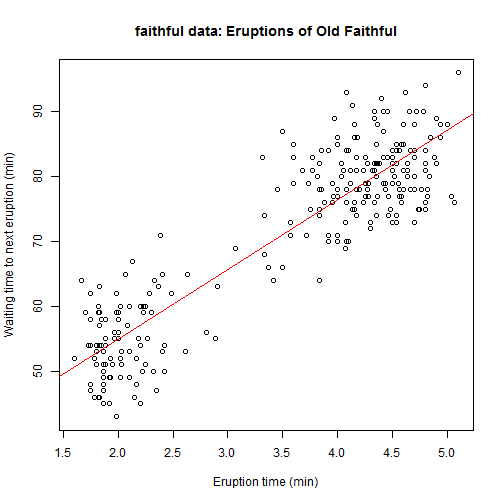

Old Faithful is a geyser in Yellowstone National Park in the U.S. It erupts periodically. See wikipedia page

It can shoot 14,000 to 32,000 liters of boiling water to a height of 30-55 meters. It is an impressive sight!
SS
Old Faithful is a geyser in Yellowstone National Park in the U.S. It erupts periodically. See wikipedia page
It can shoot 14,000 to 32,000 liters of boiling water to a height of 30-55 meters. It is an impressive sight!
The duration of each eruption and wait time between eruptions has been observed and recorded. One dataset was created with 272 observations. There seems to be a relationship between the duration of an eruption and how long you have to wait for the next one.
 The red line indicates a simple regression.
summary(fit)
##
## Call:
## lm(formula = waiting ~ eruptions, data = faithful)
##
## Residuals:
## Min 1Q Median 3Q Max
## -12.080 -4.483 0.212 3.925 15.972
##
## Coefficients:
## Estimate Std. Error t value Pr(>|t|)
## (Intercept) 33.474 1.155 29.0 <2e-16 ***
## eruptions 10.730 0.315 34.1 <2e-16 ***
## ---
## Signif. codes: 0 '***' 0.001 '**' 0.01 '*' 0.05 '.' 0.1 ' ' 1
##
## Residual standard error: 5.91 on 270 degrees of freedom
## Multiple R-squared: 0.811, Adjusted R-squared: 0.811
## F-statistic: 1.16e+03 on 1 and 270 DF, p-value: <2e-16
The p-value is well under 0.05
We now have a simple prediction model. So, for any input we can predict what will the wait be for the next eruption.
erupt<- 5 #Assume last eruption was 5 minutes long
wait <- fit$coeff[1] + erupt * fit$coeff[2]
paste("Expected time to next eruption is", round(wait, 0), "minutes.")
## [1] "Expected time to next eruption is 87 minutes."